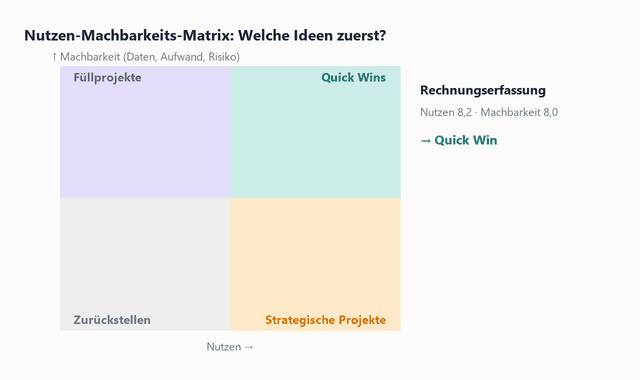
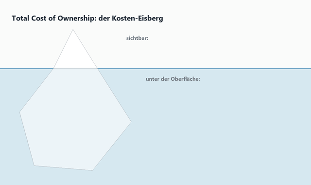
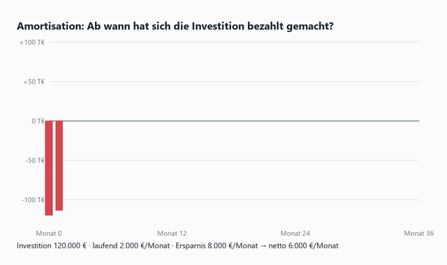
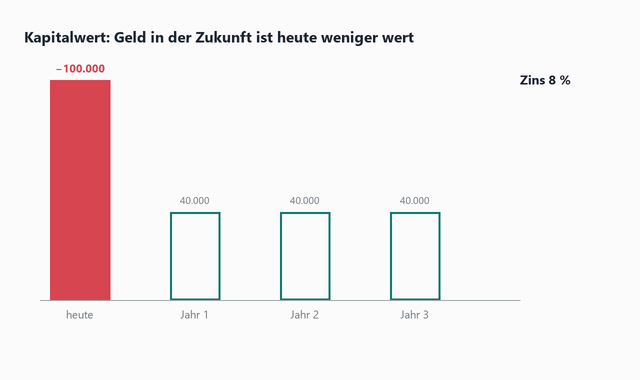
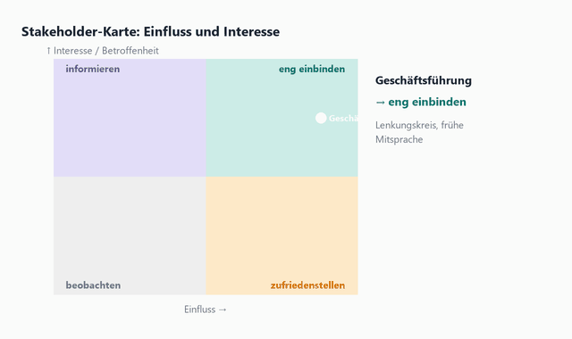
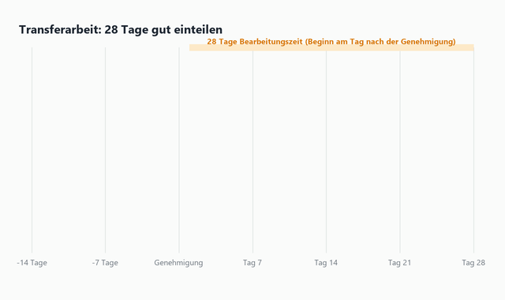

Rechnet sich das? KI-Vorhaben bewerten, Menschen mitnehmen, die Prüfung bestehen
Ein gutes Modell nützt nichts, wenn es sich nicht rechnet oder niemand es nutzt. In diesem Modul lernen Sie, Anwendungsfälle zu finden und zu bewerten, Kosten und Nutzen ehrlich zu beziffern, Amortisation, ROI und Kapitalwert zu rechnen und Ergebnisse so zu kommunizieren, dass Geschäftsführung und Fachabteilung sie verstehen. Der dritte Teil bereitet Sie gezielt auf den transferbezogenen Prüfungsteil vor: Themenwahl, Transferarbeit, Präsentation und Fachgespräch – zusammen 50 % Ihrer Note.
Wirtschaftlichkeit von KI-Vorhaben
Anwendungsfälle finden
Wer seine Wohnung renovieren will, fängt nicht mit dem Werkzeugkasten an, sondern mit der Frage: Was stört mich? Gute KI-Projekte beginnen genauso – mit einem Problem, nicht mit der Technik.
| Suchfeld | Woran erkennbar | Typische KI-Lösung |
|---|---|---|
| Wiederkehrende Routinearbeit | viele gleichartige Vorgänge, Abtippen, Sortieren | Dokumentenerkennung, Klassifikation, Sprachmodell |
| Fehler und Ausschuss | teure Nacharbeit, Reklamationen | Bildprüfung, Anomalieerkennung |
| Planungsunsicherheit | zu viel oder zu wenig Lager, Personal | Prognose |
| Wissen ist schwer zugänglich | lange Suche in Handbüchern, Rückfragen | RAG-Wissensassistent |
| Kundenkontakt | viele gleiche Fragen, lange Wartezeiten | Chatbot, E-Mail-Vorsortierung |
| Ungeplante Ausfälle | Stillstände, teure Notreparaturen | Predictive Maintenance |
- Prozessanalyse: Ist-Prozess aufnehmen, Zeitfresser und Medienbrüche markieren (Modul 12)
- Workshops mit der Fachabteilung: „Was kostet Sie am meisten Zeit oder Nerven?“
- Kennzahlen auswerten: Fehlerquoten, Durchlaufzeiten, Kosten je Vorgang
- Benchmarking: Was machen andere in der Branche?
Nicht jedes Problem braucht KI. Wenn klare, stabile Regeln reichen, ist klassische Automatisierung billiger, schneller und verlässlicher (Modul 1). Diese Abwägung gehört in jede Bewertung.
Weitere Beispiele: Vom Alltagsproblem zum KI-Kandidaten
Der Eingangsrechnungsprozess eines Betriebs wird Schritt für Schritt aufgenommen:
| Schritt | Minuten je Rechnung |
|---|---|
| Post oder Mail öffnen, sortieren | 2 |
| Daten abtippen (Lieferant, Betrag, Datum, Positionen) | 6 |
| Kontierung prüfen | 3 |
| Freigabe einholen | 4 |
| Buchen und ablegen | 1 |
| Summe | 16 |
Das Abtippen macht 6 : 16 = 37,5 % der Zeit aus und ist reine Routine – ein guter Kandidat für Dokumentenerkennung. Bei 48 € Stundensatz kostet eine Rechnung 16 : 60 · 48 = 12,80 € Bearbeitungszeit. Die Freigabe hingegen ist eine Entscheidung und bleibt beim Menschen.
| Betrieb | Problem | KI-Idee | Daten vorhanden? |
|---|---|---|---|
| Kfz-Werkstatt | Annahmegespräche dauern lange, Beschreibungen der Kunden sind ungenau | Sprachmodell erstellt aus der Kundenbeschreibung einen strukturierten Auftrag | ja: frühere Aufträge |
| Bäckerei-Kette | Zu viele Reste bei Brötchen, abends leere Regale bei Kuchen | Absatzprognose je Filiale und Wochentag | ja: Kassendaten |
| Steuerkanzlei | Mandanten stellen immer dieselben Fragen | Wissensassistent (RAG) auf Basis eigener Merkblätter | ja: Merkblätter, Mandantenmails |
Ein Betrieb möchte „mit KI“ Bestellungen automatisch in die Warenwirtschaft übernehmen. Prüfung: Die Bestellungen kommen alle im gleichen Format (CSV aus dem Webshop). Regeln genügen vollständig: Spalten zuordnen, Pflichtfelder prüfen. Das ist klassische Automatisierung – schneller, billiger, vollständig nachvollziehbar. KI wäre erst nötig, wenn Bestellungen als freie Texte oder gescannte Formulare unterschiedlicher Art eingingen.
- Mit einer Technik („Wir wollen ein Sprachmodell einsetzen“) statt mit einem Problem beginnen.
- Ideen nur im Kopf der Geschäftsführung sammeln und die Fachabteilung nicht fragen.
- Probleme wählen, für die keine Daten existieren.
Frage (5 Punkte): Nennen Sie drei Suchfelder für KI-Anwendungsfälle mit je einer passenden Lösung und erklären Sie, wann klassische Automatisierung besser ist.
Musterlösung: Routinearbeit → Dokumentenerkennung; Fehler und Ausschuss → Bildprüfung; Planungsunsicherheit → Prognose; (weitere: Wissenszugang → RAG, Kundenkontakt → Chatbot, Ausfälle → Predictive Maintenance); je 1 Punkt, max. 3. Klassische Automatisierung ist besser, wenn klare, stabile Regeln genügen: günstiger, schneller, nachvollziehbar (2 Punkte).
Beobachten Sie eine Woche lang, wo Sie oder Kollegen Informationen abtippen, suchen oder sortieren. Notieren Sie je Vorgang die Minuten und die Häufigkeit – das ist der Rohstoff für Ihre erste Bewertung in Lektion 2.
Vom Problem zur Technik, nicht umgekehrt. Gute Kandidaten: viel Routine, teure Fehler, unsichere Planung, verstecktes Wissen – und genug Daten.
Anwendungsfälle bewerten und priorisieren
Von zehn Renovierungsideen macht man zuerst die, die viel bringen und leicht gehen: neue Glühbirnen vor dem neuen Badezimmer. Bei KI-Ideen ist es genauso.

| Kriterium | Prüffragen |
|---|---|
| Nutzen | Wie viel Zeit, Geld, Qualität? Wie viele Vorgänge pro Jahr? Strategische Bedeutung? |
| Datenlage | Gibt es Daten, mit Labels, in ausreichender Qualität und Menge? Dürfen wir sie nutzen? |
| Technische Machbarkeit | Gibt es bewährte Verfahren? Integration in Systeme? |
| Risiko | Folgen von Fehlern? Risikoklasse nach AI Act? Akzeptanz? |
| Aufwand | Zeit, Budget, Know-how, externe Hilfe? |
Kriterien gewichten (z. B. Nutzen 40 %, Datenlage 25 %, Machbarkeit 20 %, Risiko 15 %), jede Idee auf einer Skala von 1 bis 10 bewerten, Punkte mal Gewicht addieren. Ausführlich mit Rechenbeispiel in Modul 12.
Weitere Beispiele: Bewerten mit Zahlen
Gewichte: Nutzen 40 %, Datenlage 25 %, Machbarkeit 20 %, Risiko 15 %. Bewertung von 1 bis 10 (beim Risiko: 10 = geringes Risiko).
| Idee | Nutzen (0,40) | Daten (0,25) | Machbarkeit (0,20) | Risiko (0,15) | Nutzwert |
|---|---|---|---|---|---|
| A Rechnungserfassung | 8 | 9 | 8 | 9 | 8,40 |
| B Vorhersage von Maschinenausfällen | 9 | 5 | 5 | 7 | 6,90 |
| C Social-Media-Texte | 3 | 8 | 9 | 8 | 6,20 |
Rechnung für A: 0,40 · 8 + 0,25 · 9 + 0,20 · 8 + 0,15 · 9 = 3,20 + 2,25 + 1,60 + 1,35 = 8,40. Für B: 3,60 + 1,25 + 1,00 + 1,05 = 6,90. Für C: 1,20 + 2,00 + 1,80 + 1,20 = 6,20. Reihenfolge: A, B, C. B hat den größten Nutzen, scheitert aber an der Datenlage – ein strategisches Projekt, für das man zuerst Daten sammelt.
- Quick Win (hoher Nutzen, hohe Machbarkeit): Rechnungserfassung – sofort starten.
- Strategisch (hoher Nutzen, geringe Machbarkeit): Ausfallvorhersage – vorbereiten, Daten sammeln, Pilot planen.
- Füllprojekt (geringer Nutzen, hohe Machbarkeit): Social-Media-Texte – nebenbei, wenn Kapazität da ist.
- Zurückstellen (geringer Nutzen, geringe Machbarkeit): Logo-Generator – nicht verfolgen.
Manche Fragen werden nicht mit Punkten abgewogen, sondern vorab geprüft: Ist der Einsatz verboten (AI Act Art. 5)? Dürfen die Daten überhaupt verarbeitet werden? Ist ein Anbieter ohne Auftragsverarbeitungsvertrag die einzige Option? Fällt ein Muss-Kriterium aus, scheidet die Idee aus – auch bei hohem Nutzwert.
- Die Gewichte so wählen, dass die Lieblingsidee gewinnt. Gewichte vor der Bewertung festlegen und begründen.
- Das Risiko in die falsche Richtung bewerten (hohes Risiko = hoher Wert).
- Den Nutzwert als Euro-Betrag missverstehen; er ist nur eine Rangordnung.
Frage (6 Punkte): Idee X erhält Nutzen 7, Daten 6, Machbarkeit 8, Risiko 9. Gewichte: Nutzen 40 %, Daten 25 %, Machbarkeit 20 %, Risiko 15 %. Berechnen Sie den Nutzwert und ordnen Sie X in die Nutzen-Machbarkeits-Matrix ein.
Musterlösung: 0,40 · 7 + 0,25 · 6 + 0,20 · 8 + 0,15 · 9 = 2,80 + 1,50 + 1,60 + 1,35 = 7,25 (4 Punkte). Nutzen mittel bis hoch, Machbarkeit hoch → eher Quick Win (2 Punkte).
Bewerten nach Nutzen und Machbarkeit (Daten, Technik, Risiko, Aufwand). Quick Wins zuerst – sie schaffen Vertrauen und Erfahrung.
Was ein KI-Projekt wirklich kostet
Ein Drucker kostet 80 €, die Patronen über die Jahre 600 €. Wer nur den Kaufpreis vergleicht, entscheidet falsch. Bei KI sind die Lizenzkosten oft der Druckerpreis – der Rest steckt in Daten, Integration und Betrieb.

| Einmalig | Laufend |
|---|---|
| Analyse und Konzept | Lizenzen, API-Tokens, Cloud |
| Datenaufbereitung und Labeling | Betrieb, Monitoring, Support |
| Entwicklung oder Anpassung | Nachtraining, Datenpflege |
| Integration in ERP, CRM, Prozesse | Wartung der Schnittstellen |
| Hardware, Einrichtung | Energie, Abschreibung |
| Rechtsprüfung, DSFA, Dokumentation | Audits, Dokumentation aktualisieren |
| Schulung, Change Management | Schulung neuer Mitarbeitender |
| Interne Arbeitszeit der Fachabteilung | Prüfung von KI-Ergebnissen durch Menschen |
Weitere Beispiele: Die Gesamtkosten (TCO) berechnen
| Einmalig | Euro | Laufend pro Jahr | Euro |
|---|---|---|---|
| Analyse und Konzept | 8.000 | Lizenz / API | 12.000 |
| Datenaufbereitung | 25.000 | Betrieb, Monitoring | 9.000 |
| Entwicklung, Anpassung | 40.000 | Nachtraining, Datenpflege | 6.000 |
| Integration | 20.000 | Menschliche Prüfung der Ergebnisse | 15.000 |
| Rechtsprüfung, DSFA | 7.000 | ||
| Schulung | 10.000 | ||
| Summe | 110.000 | Summe | 42.000 |
TCO über 3 Jahre: 110.000 + 3 · 42.000 = 236.000 €. Das Angebot des Anbieters nennt nur die Lizenz: 3 · 12.000 = 36.000 €, also 36.000 : 236.000 ≈ 15 % der Gesamtkosten. Wer nur auf den Lizenzpreis schaut, unterschätzt die Kosten um mehr als das Sechsfache.
Die Fachabteilung bringt in den ersten Monaten 120 Stunden für Workshops, Tests und Feedback ein. Es gibt keine Rechnung dafür, aber die Zeit fehlt an anderer Stelle: 120 h · 48 € = 5.760 €. Solche Kosten gehören in die Kalkulation, auch wenn niemand eine Rechnung dafür schreibt.
- Welche Kosten entstehen zusätzlich zur Lizenz (Einrichtung, Schnittstellen, Support, Schulung)?
- Wie ändern sich die Preise bei steigender Nutzung (pro Token, Nutzer oder Vorgang)?
- Welche Mindestlaufzeit gilt, und was kostet der Ausstieg einschließlich Datenrückgabe?
- Was kostet eine Anpassung bei geänderten Anforderungen?
- Nur einmalige Kosten betrachten und den Betrieb vergessen.
- Preise ohne Mehrwertsteuer und ohne Datum aus dem Internet übernehmen.
- Die menschliche Prüfung der KI-Ergebnisse als „kostenlos“ ansehen.
Frage (5 Punkte): Einmalige Kosten 80.000 €, laufende Kosten 30.000 € pro Jahr. Berechnen Sie die TCO über vier Jahre und nennen Sie drei oft vergessene Kostenarten.
Musterlösung: 80.000 + 4 · 30.000 = 200.000 € (2 Punkte). Oft vergessen: Datenaufbereitung, Integration, Schulung und Change Management, interne Arbeitszeit, Betrieb und Nachtraining, Rechtsprüfung, menschliche Prüfung (je 1 Punkt, max. 3).
Gesamtkosten (TCO) = einmalige + laufende Kosten über die Nutzungsdauer. Die interne Arbeitszeit und die menschliche Prüfung nicht vergessen.
Den Nutzen in Euro übersetzen
„Spart viel Zeit“ überzeugt keine Geschäftsführung. „Spart 1.600 Arbeitsstunden im Jahr, das sind rund 77.000 €“ schon.
| Nutzenart | Formel | Beispiel |
|---|---|---|
| Zeitersparnis | Vorgänge · gesparte Zeit · Stundensatz | Rechnungserfassung |
| Weniger Fehler | vermiedene Fehler · Kosten je Fehler | Ausschuss, Reklamationen |
| Vermiedene Ausfälle | vermiedene Ausfälle · Kosten je Ausfall − Kosten der Vorsorge | Predictive Maintenance |
| Mehr Umsatz | zusätzliche Verkäufe · Deckungsbeitrag | Empfehlungen, Kündigungsprävention |
| Geringere Bestände | Bestandssenkung · Kapitalkosten-/Lagersatz | bessere Prognose |
| Qualitativer Nutzen | schwer in Euro, aber wichtig | Zufriedenheit, Sicherheit, Image, Wissenssicherung |
Rechenweg: Rechnungserfassung
4.000 Rechnungen im Monat, je 6 Minuten gespart, Stundensatz (Vollkosten) 48 €.
- 4.000 · 6 min = 24.000 min = 400 Stunden pro Monat
- 400 h · 48 € = 19.200 € pro Monat → 230.400 € pro Jahr
Eingesparte Zeit ist nur dann Geld, wenn sie anders genutzt wird (andere Aufgaben, weniger Überstunden, Wachstum ohne Neueinstellungen). Und: Nicht jeder Vorgang wird automatisch erledigt – mit einer realistischen Quote rechnen (im Rechner: „Anteil“). Annahmen immer offenlegen.
Weitere Beispiele: Nutzen ehrlich beziffern
Ein Betrieb fertigt 200.000 Teile im Jahr. Die Ausschussquote soll von 4,2 % auf 3,0 % sinken; ein Ausschussteil verursacht 18 € Kosten.
- Vermiedene Ausschussteile: 200.000 · (0,042 − 0,030) = 200.000 · 0,012 = 2.400
- Nutzen: 2.400 · 18 € = 43.200 € pro Jahr
20 ungeplante Stillstände im Jahr, je 15.000 €. Das Modell erkennt 60 % davon rechtzeitig; die vorbeugende Wartung kostet je Fall 3.000 €.
- Vermiedene Ausfälle: 20 · 0,6 = 12
- Ersparnis je Fall: 15.000 − 3.000 = 12.000 € → 12 · 12.000 = 144.000 € pro Jahr
Zurück zur Rechnungserfassung (4.000 Rechnungen im Monat, 6 Minuten gespart, 48 € Stundensatz, Bestwert 19.200 € im Monat). Realistisch übernimmt die KI nur 70 % der Fälle, und 15 % der Rechnungen müssen 4 Minuten nachbearbeitet werden.
- Nutzen bei 70 %: 19.200 · 0,7 = 13.440 €
- Nachbearbeitung: 4.000 · 0,15 = 600 Fälle · 4 min = 2.400 min = 40 h · 48 € = 1.920 €
- Realer Nutzen: 13.440 − 1.920 = 11.520 € pro Monat → 138.240 € pro Jahr statt 230.400 €
Der vorsichtigere Wert ist immer noch beeindruckend – und viel glaubwürdiger.
Pro Jahr kündigen 1.000 Kunden. Das Modell erkennt Wechselwillige, ein Team spricht sie gezielt an; erfahrungsgemäß bleiben 20 % von ihnen. Ein gehaltener Kunde bringt 300 € Deckungsbeitrag im Jahr, die Aktion kostet 15.000 €.
1.000 · 0,2 = 200 gehaltene Kunden · 300 € = 60.000 €, abzüglich Aktionskosten 60.000 − 15.000 = 45.000 € Nettonutzen.
- Umsatz statt Deckungsbeitrag ansetzen. Vom Umsatz gehen Kosten ab.
- Die gesparte Zeit zu 100 % als Geld rechnen, obwohl sie nirgendwo eingespart wird.
- Annahmen („60 % der Ausfälle erkannt“) nicht nennen oder nicht aus dem Pilot ableiten.
Frage (5 Punkte): 2.500 Bestellungen im Monat werden je 4 Minuten schneller bearbeitet. Stundensatz 42 €. Die KI übernimmt realistisch 80 % der Fälle. Berechnen Sie den Nutzen pro Jahr.
Musterlösung: 2.500 · 4 = 10.000 min = 166,7 h; · 42 € = 7.000 € pro Monat; · 0,8 = 5.600 €; · 12 = 67.200 € pro Jahr (4 Punkte). Hinweis: Nutzen entsteht nur, wenn die Zeit anders genutzt wird (1 Punkt).
Nutzen in Euro: Menge × Effekt × Wert. Annahmen offenlegen, realistische Automatisierungsquote, qualitativen Nutzen zusätzlich nennen.
ROI und Amortisationszeit
Eine Solaranlage kostet 15.000 € und spart 1.500 € Strom im Jahr. Nach 10 Jahren ist sie bezahlt – danach verdient sie Geld. Genau so rechnet man bei KI-Projekten.

Rechenweg aus dem Lehrplan
Investition 60.000 €, laufende Kosten 1.000 €/Monat, Nutzen: zwei Vollzeitkräfte à 4.000 €/Monat werden zu 50 % entlastet.
- Nutzen: 2 · 4.000 · 0,5 = 4.000 €/Monat · netto: 4.000 − 1.000 = 3.000 €/Monat
- Amortisation: 60.000 / 3.000 = 20 Monate
- ROI nach 3 Jahren: 36 · 3.000 = 108.000 € · (108.000 − 60.000) / 60.000 = 80 %
Weitere Beispiele: Amortisation und ROI rechnen
Investition 90.000 €, Nutzen 9.000 € pro Monat, laufende Kosten 1.500 € pro Monat.
- Nettonutzen: 9.000 − 1.500 = 7.500 € pro Monat
- Amortisation: 90.000 : 7.500 = 12 Monate
- ROI nach 24 Monaten: 24 · 7.500 = 180.000 € · (180.000 − 90.000) : 90.000 = 100 %
Dasselbe Projekt, aber die ersten drei Monate sind Aufbauzeit: Es fallen schon laufende Kosten an (1.500 € pro Monat), aber noch kein Nutzen.
- Stand nach Monat 3: −90.000 − 3 · 1.500 = −94.500 €
- Danach +7.500 € pro Monat: 94.500 : 7.500 = 12,6 → 13 weitere Monate
- Amortisation: 3 + 13 = 16 Monate statt 12 auf dem Papier
| Projekt 1 | Projekt 2 | |
|---|---|---|
| Investition | 50.000 € | 120.000 € |
| Nettonutzen pro Monat | 2.000 € | 8.000 € |
| Amortisation | 25 Monate | 15 Monate |
| Nettonutzen nach 36 Monaten | 72.000 € | 288.000 € |
| ROI nach 36 Monaten | 44 % | 140 % |
Rechnung Projekt 2: 120.000 : 8.000 = 15; (288.000 − 120.000) : 120.000 = 1,4. Das größere Projekt amortisiert sich hier sogar schneller. Wichtig ist immer, Zeitraum und Annahmen zu nennen.
- Laufende Kosten vergessen und mit dem Bruttonutzen rechnen.
- ROI ohne Zeitraum angeben („ROI 80 %“ ist ohne „nach 3 Jahren“ wertlos).
- Die Aufbauzeit ohne Nutzen nicht berücksichtigen.
Frage (6 Punkte): Investition 75.000 €, laufende Kosten 1.500 € pro Monat, Nutzen 6.000 € pro Monat. Berechnen Sie die Amortisationszeit und den ROI nach 24 Monaten.
Musterlösung: Nettonutzen 4.500 € pro Monat (1 Punkt); Amortisation 75.000 : 4.500 ≈ 16,7 Monate (2 Punkte); Nettonutzen nach 24 Monaten 108.000 €; ROI = (108.000 − 75.000) : 75.000 = 44 % (3 Punkte).
Amortisation = Investition ÷ monatlicher Nettonutzen. ROI = (Nutzen − Kosten) ÷ Investition für einen genannten Zeitraum.
Kapitalwert und Szenarien
Würden Sie lieber 1.000 € heute oder 1.000 € in drei Jahren bekommen? Heute – denn Sie könnten das Geld anlegen. Darum ist Geld in der Zukunft heute weniger wert. Der Kapitalwert berücksichtigt das.

Rechenweg: 100.000 € Investition, 3 × 40.000 € Rückfluss, 8 %
- 40.000 / 1,08 = 37.037 · 40.000 / 1,1664 = 34.294 · 40.000 / 1,2597 = 31.753
- Barwert: 103.084 € · Kapitalwert: 103.084 − 100.000 = 3.084 € → lohnt sich knapp
Jede Wirtschaftlichkeitsrechnung beruht auf Annahmen. Deshalb rechnet man drei Szenarien: vorsichtig (z. B. 60 % des erwarteten Nutzens, 20 % höhere Kosten), erwartet, optimistisch. Und man fragt: Bei welchem Nutzen wäre der Kapitalwert gerade null? Die Rechtsvorschrift verlangt ausdrücklich die Interpretation „im Hinblick auf sich ändernde Rahmenbedingungen“.
Weitere Beispiele: Kapitalwert und Szenarien
Investition 60.000 €, Rückflüsse 25.000 € in jedem der Jahre 1 bis 3, Zins 10 %.
- Jahr 1: 25.000 : 1,1 = 22.727
- Jahr 2: 25.000 : 1,21 = 20.661
- Jahr 3: 25.000 : 1,331 = 18.783
- Barwert: 22.727 + 20.661 + 18.783 = 62.171 · Kapitalwert: 62.171 − 60.000 = 2.171 € → lohnt sich knapp
Bei 12 % Zins: 25.000 : 1,12 = 22.321 · 25.000 : 1,2544 = 19.930 · 25.000 : 1,4049 = 17.795, Summe 60.046 €. Kapitalwert ≈ 46 € – praktisch null. Der Zins, bei dem der Kapitalwert gerade null ist, heißt interner Zinsfuß; er liegt hier bei etwa 12 %. Das Projekt „verzinst“ das eingesetzte Geld also mit rund 12 % pro Jahr. Ist die Verzinsung der Alternative (Zinssatz, den der Betrieb verlangt) höher, lohnt es sich nicht.
Der Abzinsungsfaktor für drei Jahre bei 10 % beträgt 1/1,1 + 1/1,21 + 1/1,331 = 2,487.
| Szenario | Rückfluss je Jahr | Barwert | Kapitalwert |
|---|---|---|---|
| vorsichtig (60 % des Erwarteten) | 15.000 € | 37.303 € | −22.697 € |
| erwartet | 25.000 € | 62.171 € | +2.171 € |
| optimistisch | 32.000 € | 79.579 € | +19.579 € |
Das Projekt ist nur im erwarteten und optimistischen Fall wirtschaftlich. Wie viel Spielraum gibt es? Gesucht ist der Rückfluss, bei dem der Kapitalwert null ist: 60.000 : 2,487 = 24.127 €. Der Nutzen darf nur um (25.000 − 24.127) : 25.000 ≈ 3,5 % unter der Erwartung liegen. Das Projekt ist also sehr empfindlich – eine wichtige Aussage für die Entscheidung.
- Rückflüsse einfach addieren, ohne abzuzinsen.
- Den Zinssatz ohne Begründung wählen; er sollte zur Renditeerwartung des Betriebs passen.
- Nur ein Szenario zeigen, das gewünschte.
Frage (6 Punkte): Investition 50.000 €, Rückflüsse 30.000 € in Jahr 1 und 30.000 € in Jahr 2, Zins 10 %. Berechnen Sie den Kapitalwert und bewerten Sie das Ergebnis.
Musterlösung: 30.000 : 1,1 = 27.273; 30.000 : 1,21 = 24.793; Barwert 52.066 €; Kapitalwert = 52.066 − 50.000 = 2.066 € (4 Punkte). Positiv: Die Investition lohnt sich knapp; wegen der Annahmenempfindlichkeit Szenarien rechnen (2 Punkte).
Kapitalwert = abgezinste Rückflüsse minus Investition; > 0 lohnt sich. Immer Szenarien rechnen und Annahmen offenlegen.
Selbst entwickeln oder einkaufen?
Man kann sein Brot selbst backen oder beim Bäcker kaufen. Selbst backen lohnt sich, wenn man es oft, besonders oder günstiger braucht – und die Zeit und das Können hat.
| Eigenentwicklung (Make) | Fertige Lösung / SaaS (Buy) | |
|---|---|---|
| Passgenauigkeit | genau auf den eigenen Prozess | Standard, begrenzt anpassbar |
| Zeit bis Nutzen | lang | kurz |
| Kosten | hoch am Anfang, eigene Leute | laufende Gebühren |
| Know-how | entsteht im Haus | bleibt beim Anbieter |
| Daten und Kontrolle | bleiben im Haus | Datenschutz und Vertrag prüfen |
| Abhängigkeit | von eigenen Fachkräften | vom Anbieter (Preise, Fortbestand) |
| Wettbewerbsvorteil | möglich, wenn Kernprozess | gering – Konkurrenz kann dasselbe kaufen |
- Funktionen und Qualität (Testlauf mit eigenen Daten!)
- Datenschutz: AVV, Verarbeitung in der EU, Nutzung der Daten zum Training?
- AI-Act-Konformität und Dokumentation
- Schnittstellen, Integration
- Gesamtkosten, Vertragslaufzeit, Ausstieg und Datenrückgabe
- Referenzen, Stabilität des Anbieters, Support
Weitere Beispiele: Make or Buy rechnen
- Make: Entwicklung 150.000 € einmalig, Betrieb und Pflege 30.000 € pro Jahr.
- Buy: Einführung und Integration 20.000 € einmalig, Gebühr 4.000 € pro Monat = 48.000 € pro Jahr.
- Kosten nach 3 Jahren: Make 150.000 + 3 · 30.000 = 240.000 €, Buy 20.000 + 3 · 48.000 = 164.000 €
- Gleichstand: 150.000 + 30.000 · t = 20.000 + 48.000 · t → 130.000 = 18.000 · t → t ≈ 7,2 Jahre
Rein nach Kosten ist Buy bis ins siebte Jahr günstiger. Make lohnt sich nur, wenn Passgenauigkeit, Datenhoheit oder ein Wettbewerbsvorteil die Mehrkosten rechtfertigen – oder die Nutzung stark wächst.
Kriterien und Gewichte: Funktion 35 %, Datenschutz 30 %, Kosten 20 %, Support 15 %. Bewertung von 1 bis 10.
| Anbieter | Funktion | Datenschutz | Kosten | Support | Nutzwert |
|---|---|---|---|---|---|
| A | 8 | 6 | 7 | 9 | 7,35 |
| B | 7 | 9 | 6 | 7 | 7,40 |
| C | 9 | 4 | 8 | 6 | 6,85 |
Rechnung für B: 0,35 · 7 + 0,30 · 9 + 0,20 · 6 + 0,15 · 7 = 2,45 + 2,70 + 1,20 + 1,05 = 7,40. A und B liegen nahezu gleichauf; hier entscheidet ein Testlauf mit eigenen Daten. Anbieter C hat zwar die beste Funktion, aber einen Datenschutzwert von nur 4 – wenn Datenschutz ein Muss-Kriterium ist, scheidet er aus.
Eine Kanzlei kauft ein Sprachmodell als API (Buy), baut aber den Wissensassistenten mit den eigenen Merkblättern selbst (Make: RAG und Oberfläche). So bleibt das Wissen im Haus, die schwierige Technik kommt vom Anbieter, und der Aufwand bleibt überschaubar.
- „Selbst bauen ist billiger“ ohne Betrieb, Wartung und Fachkräfte einzurechnen.
- Einen Anbieter nach der Vorführung wählen statt nach einem Test mit eigenen Daten.
- Den Ausstieg (Datenrückgabe, Exportformate) nicht vertraglich regeln.
Frage (5 Punkte): Ein Betrieb möchte eine KI-Texterkennung für Lieferscheine. Begründen Sie, ob Make oder Buy besser passt, und nennen Sie zwei Kriterien für die Anbieterauswahl.
Musterlösung: Buy: Es handelt sich um eine Standardaufgabe, schneller Nutzen, kein Wettbewerbsvorteil durch Eigenentwicklung, geringe Anfangskosten (3 Punkte). Kriterien: Testlauf mit eigenen Dokumenten, Datenschutz (AVV, EU-Verarbeitung), Schnittstellen, Kosten und Ausstieg, Referenzen (je 1 Punkt, max. 2).
Buy für Standardaufgaben und schnellen Nutzen, Make für Kernprozesse mit Wettbewerbsvorteil. Immer mit eigenen Daten testen und Ausstieg vertraglich regeln.
Menschen mitnehmen
Stakeholder erkennen und einbinden
Wer in einem Mehrfamilienhaus den Garten umgestalten will, fragt den Vermieter (entscheidet), spricht mit den Nachbarn (sind betroffen) und informiert den Hausmeister (muss es pflegen). Wer jemanden vergisst, bekommt Ärger.

| Feld | Strategie | Beispiel |
|---|---|---|
| hoher Einfluss, hohes Interesse | eng einbinden: Lenkungskreis, Entscheidungen gemeinsam | Geschäftsführung, Betriebsrat |
| geringer Einfluss, hohes Interesse | informieren: regelmäßig berichten, Feedback einholen, schulen | Sachbearbeitung, die das System nutzt |
| hoher Einfluss, geringes Interesse | zufriedenstellen: Anforderungen erfüllen, kurz berichten | IT-Betrieb, Einkauf |
| geringer Einfluss, geringes Interesse | beobachten | externe Dienstleister |
Weitere Beispiele: Stakeholder-Karte und Kommunikationsplan
Ein Maschinenbauer führt einen KI-Assistenten für das Servicehandbuch ein. Einfluss und Interesse werden jeweils von 1 (niedrig) bis 5 (hoch) eingeschätzt:
| Stakeholder | Einfluss | Interesse | Strategie |
|---|---|---|---|
| Geschäftsführung | 5 | 4 | eng einbinden (Lenkungskreis) |
| Betriebsrat | 4 | 5 | eng einbinden (Betriebsvereinbarung) |
| Servicetechniker (Nutzer) | 2 | 5 | informieren, beteiligen, schulen |
| IT-Betrieb | 4 | 2 | zufriedenstellen (Sicherheits- und Betriebsanforderungen) |
| Einkauf | 3 | 2 | kurz informieren, bei Lizenzen einbinden |
| Externer Dienstleister | 2 | 2 | beobachten, vertraglich steuern |
Einordnung: hoher Wert bedeutet 4 oder 5; beim Betriebsrat sind beide Werte hoch, deshalb „eng einbinden“.
| Zielgruppe | Inhalt | Wie oft | Kanal |
|---|---|---|---|
| Lenkungskreis | Fortschritt, Kosten, Entscheidungen | monatlich | Sitzung, Kurzbericht |
| Betriebsrat | Datenflüsse, Auswertungen, Schutzmaßnahmen | zu Beginn und bei Änderungen | Gespräch, Betriebsvereinbarung |
| Servicetechniker | Nutzen, Bedienung, Grenzen, Feedbackwege | vor dem Start, wöchentlich im Pilot | Workshop, Kurzvideos, Sprechstunde |
| IT-Betrieb | Architektur, Sicherheit, Betrieb | nach Bedarf | Dokumentation, Abstimmung |
Die Geschäftsführung möchte möglichst schnell starten, der Betriebsrat verlangt zuerst eine Betriebsvereinbarung, die Techniker fürchten zusätzliche Kontrolle. Lösung: gemeinsamer Termin im Lenkungskreis, ein Pilot mit 8 freiwilligen Technikern unter vereinbarten Regeln (keine Auswertung auf Personenebene), Betriebsvereinbarung parallel. So kommen Tempo und Vertrauen zusammen.
- Nutzer als „geringen Einfluss“ abtun und deshalb nicht einbinden. Wer das System täglich nutzt, entscheidet über seinen Erfolg.
- Stakeholder einmal einordnen und später nicht mehr aktualisieren.
- Den Betriebsrat erst zur Abstimmung der fertigen Lösung einladen.
Frage (6 Punkte): Ordnen Sie vier Stakeholder eines KI-Einführungsprojekts nach Einfluss und Interesse ein und nennen Sie die passende Strategie.
Musterlösung: Geschäftsführung (hoher Einfluss, hohes Interesse): eng einbinden. Betriebsrat (hoch/hoch): eng einbinden. Sachbearbeitung als Nutzer (geringer Einfluss, hohes Interesse): informieren und beteiligen. IT-Betrieb (hoher Einfluss, geringes Interesse): zufriedenstellen. Externer Dienstleister (gering/gering): beobachten. Je Stakeholder mit Strategie 1,5 Punkte (max. 6).
Stakeholder nach Einfluss und Interesse einordnen; daraus folgt der Kommunikationsplan: wer, was, wie oft, über welchen Weg.
Veränderung begleiten: Akzeptanz schaffen
Wenn im Supermarkt plötzlich Selbstbedienungskassen stehen, reagieren Menschen unterschiedlich: Neugier, Skepsis, Angst um den Job. Bei KI im Betrieb ist es genauso – und die Sorgen sind ernst zu nehmen.
- „Werde ich ersetzt?“
- „Werde ich überwacht?“
- „Ich verstehe nicht, was die KI macht.“
- „Ich bin schuld, wenn die KI Fehler macht.“
- „Noch ein neues System, das nicht funktioniert.“
- Früh und ehrlich informieren: Ziel, Grenzen, Folgen für Arbeitsplätze
- Nutzer beteiligen: Anforderungen, Tests, Feedback
- Schulung (auch Pflicht nach AI Act Art. 4)
- Verantwortung klären: Wer entscheidet, wer haftet?
- Schnelle Erfolge sichtbar machen
- Betriebsrat früh einbinden
- Fürsprecher („Champions“) in den Teams
Unfreezing (Notwendigkeit verstehen) → Moving (neue Abläufe ausprobieren, unterstützen) → Refreezing (neue Routinen festigen) – nach Kurt Lewin. Widerstand ist normal und oft ein Hinweis auf echte Probleme.
Weitere Beispiele: Akzeptanz schaffen
| Äußerung | Vermutlicher Grund | Mögliche Antwort |
|---|---|---|
| „Das System macht sowieso Fehler.“ | Unsicherheit über die Qualität, schlechte Erfahrung mit früheren Systemen | Qualität offen zeigen (Testsatz, Kennzahlen), Fehler melden und beheben |
| „Will man mich damit überwachen?“ | Angst vor Kontrolle | Betriebsvereinbarung, klarer Zweck, keine Auswertung auf Personenebene |
| „Dann braucht man mich bald nicht mehr.“ | Angst um den Arbeitsplatz | ehrliche Auskunft zu Folgen, Weiterbildung, neue Aufgaben |
| „Ich habe keine Zeit, das zu lernen.“ | Überlastung, fehlender Nutzen aus Sicht des Einzelnen | Schulung in der Arbeitszeit, kurzer Einstieg, Entlastung zuerst bei lästigen Aufgaben |
- Unfreezing: Der Betrieb zeigt, warum die Veränderung nötig ist („Jede Anfrage dauert heute 18 Minuten, Kunden warten zwei Tage“) und was sie nicht bedeutet.
- Moving: Pilotgruppe nutzt das System, Rückmeldungen fließen wöchentlich ein, Fehler werden behoben, Fürsprecher berichten.
- Refreezing: Neue Abläufe werden in Arbeitsanweisungen festgeschrieben, Schulung für Neue gehört zum Einstieg, Erfolge werden gefeiert.
80 Mitarbeitende können das System nutzen, 52 tun es wöchentlich: 52 : 80 = 65 % Nutzungsquote. Ziel nach sechs Monaten: 80 %. Zusätzlich fragt eine kurze Umfrage nach Nützlichkeit (Skala 1–5) und Hindernissen. Die Schulung kostet 80 · 3 h = 240 h · 48 € = 11.520 € – eine Position, die in die Kalkulation (Lektion 3) gehört.
- Widerstand als „Störung“ behandeln statt als Information.
- Die Einführung per Rundmail verkünden und Schulung nach Bedarf anbieten.
- Zu viel auf einmal: alle Funktionen, alle Teams, sofort.
Frage (5 Punkte): Nennen Sie drei typische Sorgen von Beschäftigten bei der Einführung von KI und je eine Maßnahme.
Musterlösung: „Werde ich ersetzt?“ → ehrliche Information zu Folgen, Weiterbildung. „Werde ich überwacht?“ → Betriebsvereinbarung, klarer Zweck. „Ich verstehe es nicht.“ → Schulung, Erklärungen. (Weitere: Verantwortungsfrage → klare Regeln; Zusatzbelastung → Entlastung zeigen.) Je Sorge mit Maßnahme 1,5 Punkte, max. 5.
Überlegen Sie, wer in Ihrem Betrieb als Fürsprecher („Champion“) für ein neues System geeignet wäre – meist jemand mit Ansehen im Team, nicht unbedingt in der IT.
Akzeptanz entsteht durch Information, Beteiligung, Schulung, klare Verantwortung und sichtbare Erfolge – nicht durch Anordnung.
Ergebnisse adressatengerecht kommunizieren
Ein Arzt erklärt eine Diagnose dem Patienten anders als dem Kollegen. Beide Erklärungen sind richtig, aber nur eine passt jeweils zum Zuhörer. Die Rechtsvorschrift nennt „adressatengerechtes Kommunizieren“ ausdrücklich als Kompetenz.
| Zielgruppe | will wissen | so sprechen |
|---|---|---|
| Geschäftsführung | Nutzen, Kosten, Risiko, Entscheidung | Ergebnis zuerst, Euro, eine Seite, klare Empfehlung |
| Fachabteilung | Was ändert sich für mich? Wie bediene ich es? Wo sind Grenzen? | konkrete Abläufe, Beispiele, Schulung |
| IT | Schnittstellen, Betrieb, Sicherheit | Architektur, technische Details |
| Datenschutz, Betriebsrat | Daten, Rechte, Überwachungsmöglichkeit | Zweck, Datenflüsse, Schutzmaßnahmen |
- „Recall 0,9“ → „findet 9 von 10 defekten Teilen“
- „Precision 0,8“ → „von 10 Alarmen sind 8 berechtigt“
- „MAE 120 Stück“ → „die Prognose liegt im Schnitt 120 Stück daneben – bei 3.000 Stück Wochenabsatz“
- „AUC 0,91“ → besser nicht für Laien – lieber Beispiele
Erst die Kernaussage („Wir empfehlen die Einführung; Amortisation in 20 Monaten“), dann die drei wichtigsten Begründungen, dann die Details. Wer nur den ersten Satz hört, hat das Wichtigste.
- Eine Botschaft pro Folie – als Satz in der Überschrift
- Diagramm statt Tabelle, wenn ein Muster gezeigt werden soll (Modul 2, Lektion 7)
- Wenig Text, große Schrift, Quellen angeben
- Grenzen und Risiken offen zeigen – das schafft Vertrauen
Weitere Beispiele: Dasselbe Ergebnis, drei Zuhörer
Eine Qualitätsprüfung betrachtet 1.000 Teile, davon 20 defekt. Das Modell schlägt bei 30 Teilen Alarm; 18 davon sind wirklich defekt.
- Recall: 18 : 20 = 0,9 → „Das System findet 9 von 10 defekten Teilen.“
- Precision: 18 : 30 = 0,6 → „Von 10 Alarmen sind 6 berechtigt, 4 sind unnötig.“
- Übersehen: 2 defekte Teile gehen durch – „bei 1.000 Teilen rutschen etwa 2 durch“.
| Zuhörer | Formulierung |
|---|---|
| Geschäftsführung | „Wir empfehlen die Einführung. Sie spart rund 140.000 € im Jahr und amortisiert sich nach 17 Monaten. Das Risiko ist beherrschbar: Ein Pilot mit klaren Abbruchkriterien kommt zuerst.“ |
| Fachabteilung | „Das System füllt ab sofort die Rechnungsdaten vor. Sie prüfen und korrigieren nur noch. Bei unklaren Belegen meldet es sich, dann entscheiden Sie wie bisher.“ |
| Betriebsrat | „Das System verarbeitet nur Rechnungsdaten, keine Daten über Beschäftigte. Es gibt keine Auswertung, wer wie schnell arbeitet. Die Regeln halten wir in einer Betriebsvereinbarung fest.“ |
| Schwach (Thema) | Stark (Botschaft) |
|---|---|
| Kosten | Das Projekt kostet im ersten Jahr 110.000 €, danach 42.000 € pro Jahr |
| Ergebnisse des Modells | Das Modell erkennt 9 von 10 Ausfällen drei Tage im Voraus |
| Risiken | Datenschutz und Betriebsrat sind die größten Hürden – beide sind von Anfang an eingebunden |
- Technische Kennzahlen unübersetzt zeigen („AUC 0,91“).
- Mit der Methode beginnen statt mit dem Ergebnis.
- Grenzen und Risiken verschweigen – Prüfende und Entscheidungsträger bemerken es und verlieren Vertrauen.
Frage (5 Punkte): Ein Modell hat Recall 0,8 und Precision 0,5. Erklären Sie beide Werte in Alltagssprache für die Geschäftsführung.
Musterlösung: Recall 0,8: Das System findet 8 von 10 der tatsächlichen Fälle (z. B. defekte Teile) (2 Punkte). Precision 0,5: Jeder zweite Alarm ist unberechtigt; das bedeutet Prüfaufwand für die Fehlalarme (2 Punkte). Hinweis auf Kosten der Fehlalarme gegen den Nutzen gefundener Fälle (1 Punkt).
Zielgruppe zuerst. Ergebnis vorne, Kennzahlen in Alltagssprache, eine Botschaft pro Folie, Grenzen offen nennen.
Der transferbezogene Prüfungsteil
Präsentation und Fachgespräch machen zusammen die Hälfte Ihrer Note aus. Hier lernen Sie, wie Sie sich gezielt vorbereiten.
Das Thema der Transferarbeit finden und einreichen
Ein Meisterstück zeigt, was man kann – an einer echten Aufgabe. Die Transferarbeit ist Ihr Meisterstück: ein selbst gewähltes, praxisbezogenes KI-Thema, möglichst aus dem eigenen Betrieb.
| Vorgabe (Rechtsvorschrift § 3 Abs. 7–9) | Bedeutung für Sie |
|---|---|
| Selbst gewähltes, praxisbezogenes Thema | echtes betriebliches Problem, kein Lehrbuchbeispiel |
| Schwerpunkt auf KI-Inhalten (§ 4), unter Einbeziehung von §§ 5–8 | Technik plus Prozess/Projekt, Recht, Wirtschaftlichkeit, Zukunftskompetenzen |
| Betriebspraktische Probleme analysieren, datenbasierte Lösungen entwickeln, bewerten, vertreten – unter Beachtung ökonomischer und rechtlicher Einflussfaktoren | Ist-Analyse, Lösung, Bewertung, Wirtschaftlichkeit, Recht |
| Visualisierte Form (z. B. Foliensatz) | Folien, die auch ohne Vortrag verständlich sind |
| Themenvorschlag mit Kurzbeschreibung und Gliederung mit aussagekräftigen Unterpunkten | sorgfältig formulieren – der Ausschuss prüft die Eignung (DQR 5) |
| Auflagen des Ausschusses | selbstständig einarbeiten |
| 28 Tage Bearbeitungszeit ab dem Tag nach der Genehmigung | gut planen (Lektion 12) |
- Echtes Problem mit messbarem Nutzen
- Daten vorhanden oder beschaffbar (Datenschutz klären!)
- Weder zu groß („KI-Strategie für den Konzern“) noch zu klein („Excel-Formel“)
- Mehrere Handlungsbereiche lassen sich sinnvoll einbeziehen
- Sie können es in 28 Tagen ausarbeiten
Beispiel eines Themenvorschlags
Thema: Konzept für eine KI-gestützte Vorhersage ungeplanter Ausfälle an den Spritzgießmaschinen der Muster GmbH.
Kurzbeschreibung: An 12 Spritzgießmaschinen treten jährlich rund 20 ungeplante Stillstände auf (Kosten ca. 15.000 € je Ausfall). Seit zwei Jahren werden Temperatur, Druck und Zykluszeit erfasst. Die Arbeit analysiert die Datenlage, entwickelt ein Konzept für ein Vorhersagemodell, bewertet Wirtschaftlichkeit, rechtliche Rahmenbedingungen und die Einführung im Instandhaltungsprozess.
Gliederung: 1 Ausgangslage und Ziel (Ist-Prozess Instandhaltung, Kosten der Ausfälle, SMART-Ziel) · 2 Daten (Quellen, Qualität, Aufbereitung) · 3 Lösungsansatz (Verfahrenswahl, Bewertungskriterien, Prototyp-Ergebnisse) · 4 Wirtschaftlichkeit (Kosten, Nutzen, Amortisation, Szenarien) · 5 Recht und Risiken (AI Act, Datenschutz, Betriebsrat) · 6 Einführung (Projektplan, Stakeholder, Schulung, Monitoring) · 7 Fazit und Empfehlung
Weitere Beispiele: Themenvorschläge prüfen und verbessern
| Thema | Beurteilung |
|---|---|
| „KI-Strategie für den Gesamtkonzern“ | zu groß: in 28 Tagen nicht seriös zu bearbeiten |
| „Eine Excel-Formel zur Berechnung des Lagerbestands“ | zu klein, keine KI-Inhalte nach § 4 |
| „Konzept für eine KI-gestützte Vorsortierung der Kundenanfragen im Service der Beispiel AG“ | passend: klar begrenzt, echtes Problem, Daten vorhanden, Wirtschaftlichkeit und Recht gut einbeziehbar |
| „Wie funktionieren neuronale Netze?“ | Lehrbuchthema ohne Praxisbezug |
Thema: Konzept für die KI-gestützte Vorsortierung eingehender Kundenanfragen im Service der Beispiel AG.
Kurzbeschreibung: Im Kundenservice gehen monatlich rund 1.800 E-Mails ein, die von Hand an vier Teams verteilt werden (durchschnittlich 3 Minuten je Mail). Fehlverteilungen führen zu Wartezeiten von bis zu zwei Tagen. Die Arbeit analysiert die vorhandenen Daten (24 Monate beschriftete Mails), entwickelt ein Klassifikationskonzept, bewertet Wirtschaftlichkeit, Datenschutz und AI-Act-Einordnung und plant die Einführung mit Betriebsrat und Schulung.
Gliederung: 1 Ausgangslage und Ziel (Ist-Prozess, SMART-Ziel: Fehlverteilung von 15 % auf unter 5 %) · 2 Daten (Quellen, Qualität, Datenschutz) · 3 Lösung (Verfahren, Kennzahlen, Grenzen) · 4 Wirtschaftlichkeit (Kosten, Nutzen, Amortisation, Szenarien) · 5 Recht und Risiken (AI Act, DSGVO, Betriebsrat) · 6 Einführung (Pilot, Stakeholder, Schulung, Monitoring) · 7 Fazit.
- Ist das Problem echt und mit einer Zahl beschrieben?
- Sind Daten vorhanden, und ist geklärt, ob ich sie nutzen darf (anonymisiert, Zustimmung des Arbeitgebers)?
- Lässt sich die Arbeit in 28 Tagen leisten?
- Kommen Technik (§ 4) und die weiteren Handlungsbereiche (§§ 5–8: Prozess und Projekt, Wirtschaftlichkeit, Recht, Zukunftskompetenzen) sinnvoll in der Gliederung vor?
- Sind die Unterpunkte aussagekräftig, nicht nur „Einleitung“, „Hauptteil“, „Schluss“?
- Die Gliederung nur technisch aufbauen und Wirtschaftlichkeit, Recht, Einführung weglassen.
- Ein Thema wählen, für das es im Betrieb keine Daten gibt oder deren Nutzung nicht erlaubt ist.
- Die Kurzbeschreibung ohne konkrete Zahlen schreiben.
Frage (5 Punkte): Nennen Sie fünf Merkmale eines gut geeigneten Themas für die Transferarbeit und zwei Bestandteile des Themenvorschlags.
Musterlösung: Echtes betriebliches Problem, messbarer Nutzen, vorhandene oder beschaffbare Daten (Datenschutz geklärt), passender Umfang, mehrere Handlungsbereiche einbeziehbar, in 28 Tagen bearbeitbar (je 0,7 Punkte, max. 3,5). Themenvorschlag: Kurzbeschreibung und Gliederung mit aussagekräftigen Unterpunkten (je 0,75 Punkte).
Echtes Problem, messbarer Nutzen, verfügbare Daten, passender Umfang. Themenvorschlag mit klarer Kurzbeschreibung und aussagekräftiger Gliederung über alle Handlungsbereiche.
Die Transferarbeit erstellen: Plan und Aufbau
28 Tage klingen viel – bis man merkt, dass Urlaub, Arbeit und eine Rückfrage beim Datenschutz dazwischenkommen. Ein Zeitplan mit Puffer ist die halbe Miete.

| Folienteil | Inhalt | ca. Folien |
|---|---|---|
| Titel, Agenda | Thema, Name, Gliederung | 2 |
| Ausgangslage und Ziel | Problem, Kosten, Ist-Prozess, SMART-Ziel | 2–3 |
| Daten | Quellen, Qualität, Aufbereitung, EDA-Diagramm | 2 |
| Lösung | Verfahren und Begründung, Ergebnisse mit Kennzahlen, Grenzen | 3–4 |
| Wirtschaftlichkeit | Kosten, Nutzen, Amortisation/Kapitalwert, Szenarien | 2 |
| Recht und Risiken | AI-Act-Klasse, Datenschutz, Fairness, Betriebsrat | 1–2 |
| Einführung | Projektplan, Stakeholder, Change, Monitoring | 2 |
| Fazit | Empfehlung, nächste Schritte | 1 |
- Zu viel Technik, zu wenig Wirtschaftlichkeit und Recht
- Keine Baseline, keine Grenzen des Modells
- Folien als Textwüste
- Annahmen nicht offengelegt
- Auflagen des Ausschusses nicht eingearbeitet
- Vertrauliche Firmendaten ungeschützt – anonymisieren oder mit Zustimmung des Arbeitgebers
Weitere Beispiele: Zeitplan und Aufbau der Arbeit
Berufsbegleitend stehen an 20 Werktagen je 2 Stunden und an den 8 Wochenendtagen je 4 Stunden zur Verfügung: 20 · 2 + 8 · 4 = 40 + 32 = 72 Stunden.
| Teil | Stunden |
|---|---|
| Ist-Analyse, Ziel | 8 |
| Daten (Prüfung, Aufbereitung, Diagramme) | 10 |
| Lösung (Verfahren, Ergebnisse, Grenzen) | 16 |
| Wirtschaftlichkeit | 10 |
| Recht und Risiken | 6 |
| Folien gestalten | 12 |
| Probevortrag | 6 |
| Puffer | 4 |
| Summe | 72 |
Wer die Stunden vorher aufteilt, merkt früh, ob der Umfang des Themas zu groß ist. Der Puffer (hier 4 Stunden, rund 5 %) sollte eher größer sein; Rückfragen beim Datenschutz oder fehlende Daten kosten schnell Tage.
| Annahme | Wert | Quelle |
|---|---|---|
| Vorgänge pro Monat | 1.800 | Auswertung Ticketsystem 2025 |
| Zeitersparnis je Vorgang | 2 Minuten | Messung im Pilot (30 Fälle) |
| Automatisierungsquote | 75 % | Testergebnis Genauigkeit 0,75 bei sicherer Zuordnung |
| Stundensatz | 42 € | Angabe Controlling (Vollkosten) |
Eine solche Tabelle macht die Rechnung prüfbar und zeigt Sorgfalt.
Die Arbeit enthält Kundennamen, Umsatzzahlen und Maschinendaten des Arbeitgebers. Vor der Abgabe: Zustimmung des Arbeitgebers einholen, Personenbezug entfernen, Firmennamen ggf. ändern („Beispiel AG“), Zahlen auf plausible, aber verfremdete Größenordnungen anpassen, wenn nötig. Wichtig ist, dass die Methodik nachvollziehbar bleibt.
- Die ersten zwei Wochen mit Technik verbringen und Wirtschaftlichkeit und Recht auf die letzten zwei Tage schieben.
- Ein Prototyp-Ergebnis ohne Baseline und ohne Grenzen zeigen.
- Auflagen des Ausschusses „später“ einarbeiten und dann vergessen.
Frage (5 Punkte): Beschreiben Sie den Aufbau einer Transferarbeit (Foliensatz) und nennen Sie drei häufige Fehler.
Musterlösung: Titel und Agenda; Ausgangslage und Ziel; Daten; Lösung mit Ergebnissen und Grenzen; Wirtschaftlichkeit; Recht und Risiken; Einführung; Fazit mit Empfehlung (3 Punkte). Fehler: zu viel Technik, keine Baseline, Textwüste, nicht offengelegte Annahmen, fehlende Auflagen-Umsetzung (je 1 Punkt, max. 2).
Zeitplan mit Puffer; Aufbau entlang Ausgangslage – Daten – Lösung – Wirtschaftlichkeit – Recht – Einführung – Fazit; Grenzen und Annahmen offen zeigen.
Die Präsentation: 10 bis 15 Minuten überzeugen
Ein Musiker übt sein Stück so oft, bis er nicht mehr an die Noten denken muss – dann kann er auf das Publikum achten. Eine Präsentation gelingt genauso: durch Proben.
- Einstieg (1 min): Problem mit einer Zahl („20 Stillstände kosten 300.000 € im Jahr“)
- Hauptteil (10 min): Lösung, Ergebnisse, Wirtschaftlichkeit, Recht
- Schluss (1–2 min): klare Empfehlung, nächste Schritte
- Frei sprechen, Stichwortkarten erlaubt
- Blickkontakt zum Ausschuss
- Auf die Folie zeigen, nicht vorlesen
- Fachbegriffe sicher und kurz erklären
- Zeit einhalten – mit Uhr üben
- Ruhig bleiben bei Technikpannen (Ausdruck dabei)
Mindestens drei Probevorträge mit Stoppuhr, einer davor vor fremden Zuhörern. Bewertet werden Inhalt, Struktur, Visualisierung, Auftreten und die Fähigkeit, die Lösung zu vertreten (Verteidigung).
Weitere Beispiele: Eine Präsentation vorbereiten
| Teil | Minuten |
|---|---|
| Einstieg (Problem in Zahlen) | 1,0 |
| Ausgangslage und Ziel | 1,5 |
| Daten | 1,5 |
| Lösung und Ergebnisse | 3,0 |
| Wirtschaftlichkeit | 2,0 |
| Recht und Risiken | 1,0 |
| Einführung | 1,5 |
| Fazit und Empfehlung | 1,0 |
| Summe | 12,5 |
12,5 Minuten liegen mitten im vorgesehenen Rahmen von 10 bis 15 Minuten. Bei etwa 14 Folien sind das 12,5 : 14 ≈ 0,9 Minuten je Folie – genug, um eine Botschaft zu vermitteln, ohne zu hetzen. Als Orientierung: Bei etwa 130 gesprochenen Wörtern pro Minute entspricht das gut 1.600 Wörtern Vortrag.
- Schwach: „Guten Tag, ich möchte Ihnen heute meine Arbeit zum Thema Predictive Maintenance vorstellen.“
- Stark: „An zwölf Maschinen fallen bei uns pro Jahr 20 Mal ungeplant Anlagen aus. Jeder Stillstand kostet 15.000 €, zusammen 300.000 €. Ich zeige Ihnen, wie wir den Großteil davon vermeiden können.“
Der starke Einstieg nennt das Problem und eine Zahl, weckt Interesse und führt direkt in die Arbeit.
| Kriterium | Frage an die Zuhörer |
|---|---|
| Inhalt | Habe ich Ziel, Lösung, Wirtschaftlichkeit und Recht verstanden? |
| Struktur | War der rote Faden erkennbar? |
| Folien | Eine Botschaft je Folie? Lesbar? Diagramme verständlich? |
| Auftreten | Freie Rede, Blickkontakt, Tempo, Verständlichkeit? |
| Zeit | Zeit eingehalten? Wo wurde gehetzt? |
- Folien ablesen und den Prüfenden den Rücken zuwenden.
- Viel zu lange bei der Technik verweilen und Wirtschaftlichkeit und Recht in einer Minute abhandeln.
- Nie mit Stoppuhr geübt und deshalb abgebrochen werden.
Frage (5 Punkte): Wie bauen Sie eine zwölfminütige Präsentation auf, und wie bereiten Sie sich vor?
Musterlösung: Einstieg mit dem Problem in Zahlen (1 Min.), Hauptteil entlang der Gliederung (Lösung, Ergebnisse, Wirtschaftlichkeit, Recht, Einführung; rund 10 Min.), Schluss mit Empfehlung und nächsten Schritten (1 Min.) (3 Punkte). Vorbereitung: mindestens drei Probevorträge mit Stoppuhr, einer vor fremden Zuhörern, Feedback einarbeiten, Ausdruck als Rückfallebene (2 Punkte).
Einstieg mit dem Problem in Zahlen, Hauptteil entlang der Gliederung, Schluss mit klarer Empfehlung. Proben, proben, proben – mit Stoppuhr.
Das transferbezogene Fachgespräch
Nach einem Vortrag fragt das Publikum nach – nicht um Sie vorzuführen, sondern weil es verstehen will, wie gut Sie Ihr Thema durchdrungen haben. Im Fachgespräch (ca. 20 Minuten) zeigen Sie, dass Sie eine komplexe Aufgabe „unter Einbeziehung der §§ 4 bis 8 erfassen, darstellen, beurteilen und kommunizieren“ können.
| Bereich | Typische Fragen |
|---|---|
| Technik | Warum dieses Verfahren und kein neuronales Netz? Wie haben Sie Overfitting und Leakage ausgeschlossen? Welche Kennzahl und warum? |
| Daten | Wie gut sind die Daten? Was fehlt? Wie gehen Sie mit unbalancierten Klassen um? |
| Prozess, Projekt | Wer nutzt das Ergebnis wie? Wie sieht der Projektplan aus? Wer ist beteiligt? |
| Wirtschaftlichkeit | Welche Annahmen stecken in Ihrer Rechnung? Was passiert, wenn der Nutzen nur halb so groß ist? |
| Recht, Ethik | Welche Risikoklasse? Welche Daten sind personenbezogen? Was sagt der Betriebsrat? |
| Betrieb | Woran erkennen Sie, dass neu trainiert werden muss? |
| Zukunftskompetenzen | Wie haben Sie Ihre Arbeit organisiert? Was würden Sie heute anders machen? Wie erklären Sie das einem skeptischen Meister? |
- Frage kurz wiederholen oder umformulieren (gewinnt Zeit, sichert Verständnis)
- Kernaussage zuerst
- Begründung mit Bezug zum eigenen Fall
- Gegebenenfalls Alternative und Abwägung nennen
Ehrlich bleiben und laut denken: „Das habe ich nicht untersucht. Ich würde so vorgehen: …“ Prüfende bewerten auch den Lösungsweg. Raten oder Ausweichen kostet mehr Punkte als eine ehrliche, durchdachte Antwort.
Weitere Beispiele: Fragen im Fachgespräch beantworten
Ausgangswerte der Arbeit: Investition 60.000 €, laufende Kosten 1.000 € pro Monat, Nutzen 4.000 € pro Monat.
Antwort: „Dann sinkt der Nutzen auf 2.000 € pro Monat, der Nettonutzen auf 1.000 €. Die Amortisation verlängert sich von 20 auf 60.000 : 1.000 = 60 Monate, also fünf Jahre. Nach 36 Monaten läge der ROI bei (36.000 − 60.000) : 60.000 = −40 %. Das Projekt wäre in diesem Fall nicht wirtschaftlich. Deshalb empfehle ich einen Pilot mit festgelegtem Mindestnutzen, bevor die volle Investition erfolgt.“ Die Antwort nennt Zahlen, eine Konsequenz und eine Maßnahme.
Antwort in vier Schritten: (1) Kernaussage: „An Monitoring-Alarmen.“ (2) Begründung: „Ich überwache die Eingabedaten mit dem PSI; über 0,25 prüfe ich die Daten. Zusätzlich beobachte ich Recall, sobald echte Ergebnisse vorliegen; fällt er unter 70 %, löse ich eine Analyse aus.“ (3) Bezug zum Fall: „Bei den Spritzgießmaschinen sind Werkzeugwechsel ein typischer Auslöser.“ (4) Abwägung: „Zusätzlich trainiere ich spätestens alle sechs Monate neu.“
Frage: „Haben Sie Differential Privacy für die Daten erwogen?“ Man hat sich damit nicht beschäftigt. Schwach: „Äh, nein … das war nicht Thema.“ Stark: „Das habe ich nicht untersucht, weil die Daten bei uns bereits aggregiert und anonymisiert sind. Wenn ich personenbezogene Daten nutzen würde, würde ich zuerst Pseudonymisierung und Datenminimierung prüfen und Differential Privacy als zusätzliche Maßnahme bewerten.“ Ehrlich, strukturiert, mit erkennbarem Verständnis.
- Technik: „Warum ein Entscheidungsbaum und kein neuronales Netz?“ → wenig Daten, Erklärbarkeit, Baseline-Vergleich.
- Daten: „Wie gehen Sie mit seltenen Ausfällen um?“ → unbalancierte Klassen, Gewichtung, Recall im Fokus.
- Recht: „Welche Risikoklasse hat Ihre Lösung?“ → begründete Einstufung, Pflichten.
- Betrieb: „Wer ist nach dem Pilot verantwortlich?“ → Rollen, Betrieb, Monitoring.
- Ausweichen oder raten statt ehrlich zu antworten.
- Nur den Bereich vorbereiten, in dem man sich sicher fühlt. Die Fragen verteilen sich auf alle Handlungsbereiche.
- Lange Monologe ohne Kernaussage.
Frage (5 Punkte): Beschreiben Sie eine Antworttechnik für das Fachgespräch und erklären Sie, wie Sie mit einer unbekannten Frage umgehen.
Musterlösung: Frage kurz wiederholen; Kernaussage zuerst; Begründung mit Bezug zum eigenen Fall; ggf. Alternative und Abwägung nennen (3 Punkte). Unbekannte Frage: ehrlich sagen, dass man es nicht untersucht hat, und laut denken, wie man vorgehen würde; Ausweichen oder Raten kostet mehr Punkte (2 Punkte).
Lassen Sie sich von zwei Kolleginnen oder Kollegen zu Ihrem Thema befragen – am besten von Personen aus Technik und Verwaltung. Die Fragen, bei denen Sie ins Stocken geraten, zeigen, wo Sie noch nacharbeiten sollten.
Im Fachgespräch: Kernaussage, Begründung, Bezug zum eigenen Fall, Abwägung. Alle Handlungsbereiche vorbereiten. Bei Unwissen: ehrlich und strukturiert weiterdenken.
12 Übungen mit Antwortfeldern
Tragen Sie Ihre Antworten in die Felder ein. Freitext bewertet die KI wie ein IHK-Prüfer. Öffnen Sie die Musterlösung erst danach.
Aufgabe 1: Amortisation
2 PunkteEin KI-Projekt kostet einmalig 120.000 € und laufend 2.000 € pro Monat. Es spart 8.000 € pro Monat. Nach wie vielen Monaten hat es sich amortisiert?
Lösung anzeigen
Netto 6.000 €/Monat; 120.000 / 6.000 = 20 Monate.
Aufgabe 2: ROI
3 PunkteInvestition 60.000 €, laufende Kosten 1.000 €/Monat, Nutzen 4.000 €/Monat. Berechnen Sie (a) den monatlichen Nettonutzen, (b) den Nettonutzen nach 36 Monaten, (c) den ROI nach 36 Monaten in Prozent.
Lösung anzeigen
(a) 3.000 €, (b) 108.000 €, (c) (108.000 − 60.000) / 60.000 = 80 %.
Aufgabe 3: Nutzen der Zeitersparnis
2 Punkte4.000 Rechnungen im Monat, je 6 Minuten gespart, Stundensatz 48 €. Wie hoch ist der Nutzen pro Monat?
Lösung anzeigen
400 Stunden · 48 € = 19.200 €.
Aufgabe 4: Kapitalwert
4 PunkteInvestition 100.000 €, Rückflüsse 40.000 € in jedem der Jahre 1 bis 3, Kalkulationszins 8 %. Berechnen Sie den Kapitalwert (auf ganze Euro). Lohnt sich die Investition?
Lösung anzeigen
37.037 + 34.294 + 31.753 = 103.084; KW ≈ 3.084 € (3 P.) → lohnt sich (knapp) (1 P.).
Aufgabe 5: Priorisieren
4 PunkteOrdnen Sie in die Nutzen-Machbarkeits-Matrix ein: (1) hoher Nutzen, hohe Machbarkeit, (2) hoher Nutzen, geringe Machbarkeit, (3) geringer Nutzen, hohe Machbarkeit, (4) geringer Nutzen, geringe Machbarkeit.
Lösung anzeigen
(1) Quick Win, (2) strategisches Projekt, (3) Füllprojekt, (4) zurückstellen.
Aufgabe 6: Versteckte Kosten
4 PunkteEin Anbieter bietet eine KI-Lösung für 500 € im Monat an. Nennen Sie vier Kostenarten, die in diesem Preis vermutlich nicht enthalten sind.
Lösung anzeigen
Je 1 P.: Datenaufbereitung, Integration in bestehende Systeme, Schulung und Change Management, interne Arbeitszeit, Betrieb/Monitoring/Nachtraining, Rechtsprüfung/DSFA/Dokumentation, menschliche Prüfung der Ergebnisse.
Aufgabe 7: Make or Buy
3 PunkteEin Maschinenbauer überlegt, ob er eine KI-Qualitätsprüfung selbst entwickelt oder einkauft. Nennen Sie je ein Argument für Make und für Buy und ein Kriterium für die Entscheidung.
Lösung anzeigen
Make: passgenau, Know-how und Wettbewerbsvorteil im Kernprozess, Daten bleiben im Haus (1 P.). Buy: schneller Nutzen, geringere Anfangskosten, erprobte Lösung (1 P.). Kriterium: Kernprozess/Wettbewerbsvorteil, vorhandenes Know-how, Gesamtkosten, Datenschutz/Abhängigkeit (1 P.).
Aufgabe 8: Stakeholder einordnen
4 PunkteWelche Strategie passt? (1) Geschäftsführung, (2) Betriebsrat, (3) Sachbearbeitung, die das System täglich nutzen soll (wenig Einfluss, stark betroffen), (4) externer IT-Dienstleister mit geringem Interesse und Einfluss.
Lösung anzeigen
(1) eng einbinden, (2) eng einbinden, (3) informieren (und beteiligen), (4) beobachten.
Aufgabe 9: Kennzahl übersetzen
2 PunkteErklären Sie der Geschäftsführung in zwei Sätzen, was ein Recall von 0,85 und eine Precision von 0,6 bei einer Betrugserkennung bedeuten.
Lösung anzeigen
Das System findet 85 von 100 Betrugsfällen (1 P.). Von 10 Alarmen sind 6 berechtigt, 4 sind Fehlalarme, die kurz geprüft werden müssen (1 P.).
Aufgabe 10: Themenvorschlag
5 PunkteFormulieren Sie einen Themenvorschlag für Ihre eigene Transferarbeit: Thema, Kurzbeschreibung (3–5 Sätze) und Gliederung mit Unterpunkten.
Lösung anzeigen
Bewertet werden (je 1 P.): praxisbezogenes, abgegrenztes Thema; Kurzbeschreibung mit Problem, Zahlen und Ziel; Datenlage genannt; Gliederung mit aussagekräftigen Unterpunkten; Einbeziehung der Handlungsbereiche (KI-Lösung, Prozess/Projekt, Wirtschaftlichkeit, Recht, Zukunftskompetenzen). Vergleichen Sie mit dem Muster in Lektion 11.
Aufgabe 11: Bearbeitungszeit
2 PunkteIhr Thema wird am 3. März genehmigt. Die Bearbeitungszeit beträgt 28 Tage und beginnt einen Tag nach der Genehmigung. Welcher Tag im März ist der letzte Bearbeitungstag?
Lösung anzeigen
Beginn 4. März (Tag 1), Tag 28 = 31. März. Den genauen Abgabemodus erfahren Sie von Ihrer IHK.
Aufgabe 12: Fachgesprächsfrage
3 PunkteIm Fachgespräch fragt die Prüferin: „Warum haben Sie einen Random Forest gewählt und kein neuronales Netz?“ Formulieren Sie eine gute Antwort für ein Projekt mit 4.000 Datensätzen aus Maschinensensoren.
Lösung anzeigen
Beispiel: „Es handelt sich um Tabellendaten mit rund 4.000 Datensätzen. Darauf liefern Baumverfahren erfahrungsgemäß sehr gute Ergebnisse und überfitten weniger als ein neuronales Netz, das deutlich mehr Daten bräuchte. Außerdem zeigt die Feature Importance der Instandhaltung, welche Sensorwerte auf Ausfälle hinweisen. Ein neuronales Netz habe ich als Vergleich geprüft; es war nicht besser.“ – Je 1 P.: Kernaussage, fallbezogene Begründung (Datenart/Menge), Abwägung bzw. Zusatznutzen (Erklärbarkeit, Vergleich).
Abschlussquiz Modul 11
20 Fragen, jeweils eine richtige Antwort. Ab 14 richtigen Antworten sind Sie gut vorbereitet.
Das Wichtigste auf einen Blick
Anwendungsfälle
Vom Problem zur Technik; Nutzen × Machbarkeit; Quick Wins zuerst.
Kosten
TCO: einmalig + laufend; versteckte Kosten beachten.
Nutzen
Menge × Effekt × Wert; Annahmen offenlegen.
Kennzahlen
Amortisation, ROI für Zeitraum, Kapitalwert > 0, Szenarien.
Make or Buy
Kernprozess → Make; Standard → Buy; Ausstieg regeln.
Stakeholder
Einfluss × Interesse → Kommunikationsplan.
Change
Informieren, beteiligen, schulen, Verantwortung klären.
Kommunikation
Ergebnis zuerst, Kennzahlen übersetzen, eine Botschaft je Folie.
Prüfung
Themenvorschlag, 28 Tage, 10–15 min Vortrag, 20 min Fachgespräch.
Weiter mit Modul 12: Ergänzungen laut Rechtsvorschrift – Robustheit, Prozessmanagement, Rechtsformen, Verträge, Urheber- und Patentrecht, Steuern, Kostenrechnung, Finanzierung und Zukunftskompetenzen.